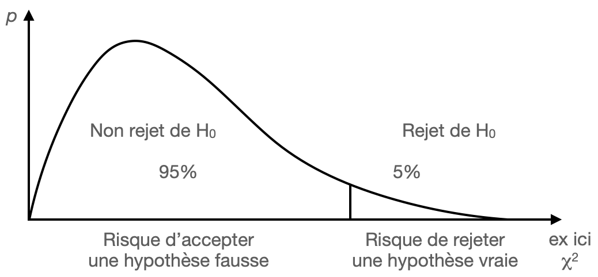
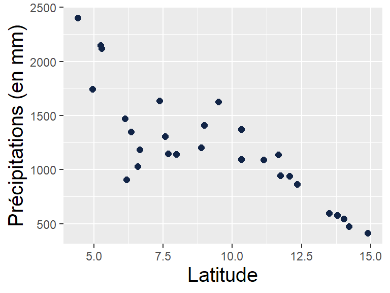
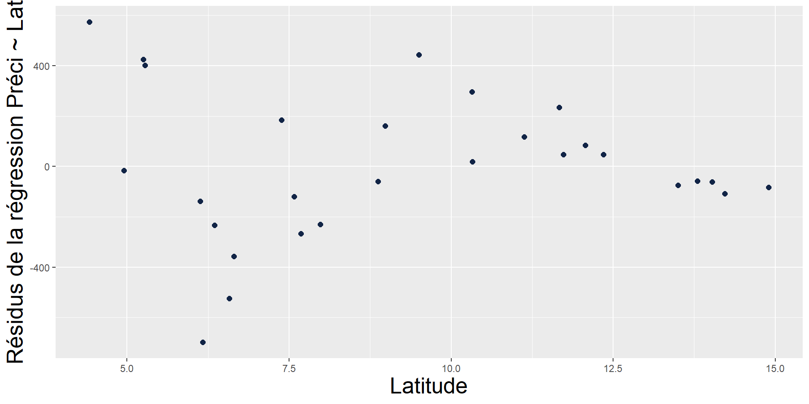

.
Introduction
Les objectifs du cours
découvrir ou approfondir les statistiques bivariées (à replacer entre univariées et multivariées)
savoir quelles méthodes choisir en fonction de la question et des données
les appliquer sous R (ou autres ?)
comprendre l’importance des écarts au modèle
Objectifs lors de l’atelier de l’EE2022 :
Les conditions envisagées
entre 10h et 60h
cours théorique s’appuyant sur des exemples d’application
séances pratiques sous R
Lors de l’atelier de l’EE2022 :
Contenu du cours
à moduler selon le temps dédié au cours
Les statistiques bivariées
| country | date | longitude | latitude | region | income_level | CO2_hab | GDP_hab |
|---|---|---|---|---|---|---|---|
| Angola | 1990 | 13.24200 | -8.81155 | Sub-Saharan Africa | Lower middle income | 0.0004317 | 947.7042 |
| France | 1990 | 2.35097 | 48.85660 | Europe & Central Asia | High income | 0.0064512 | 21793.8426 |
| India | 1990 | 77.22500 | 28.63530 | South Asia | Lower middle income | 0.0007090 | 367.5566 |
| Senegal | 1990 | -17.47340 | 14.72470 | Sub-Saharan Africa | Lower middle income | 0.0004229 | 961.5739 |
Source : Banque Mondiale, 1990
Les statistiques bivariées
| country | date | longitude | latitude | region | income_level | CO2_hab | GDP_hab |
|---|---|---|---|---|---|---|---|
| Angola | 1990 | 13.24200 | -8.81155 | Sub-Saharan Africa | Lower middle income | 0.0004317 | 947.7042 |
| France | 1990 | 2.35097 | 48.85660 | Europe & Central Asia | High income | 0.0064512 | 21793.8426 |
| India | 1990 | 77.22500 | 28.63530 | South Asia | Lower middle income | 0.0007090 | 367.5566 |
| Senegal | 1990 | -17.47340 | 14.72470 | Sub-Saharan Africa | Lower middle income | 0.0004229 | 961.5739 |
Source : Banque Mondiale, 1990
Statistiques univariées
Les statistiques bivariées
| country | date | longitude | latitude | region | income_level | CO2_hab | GDP_hab |
|---|---|---|---|---|---|---|---|
| Angola | 1990 | 13.24200 | -8.81155 | Sub-Saharan Africa | Lower middle income | 0.0004317 | 947.7042 |
| France | 1990 | 2.35097 | 48.85660 | Europe & Central Asia | High income | 0.0064512 | 21793.8426 |
| India | 1990 | 77.22500 | 28.63530 | South Asia | Lower middle income | 0.0007090 | 367.5566 |
| Senegal | 1990 | -17.47340 | 14.72470 | Sub-Saharan Africa | Lower middle income | 0.0004229 | 961.5739 |
Source : Banque Mondiale, 1990
Statistiques univariées ⭢ bivariées
Les statistiques bivariées
| country | date | longitude | latitude | region | income_level | CO2_hab | GDP_hab |
|---|---|---|---|---|---|---|---|
| Angola | 1990 | 13.24200 | -8.81155 | Sub-Saharan Africa | Lower middle income | 0.0004317 | 947.7042 |
| France | 1990 | 2.35097 | 48.85660 | Europe & Central Asia | High income | 0.0064512 | 21793.8426 |
| India | 1990 | 77.22500 | 28.63530 | South Asia | Lower middle income | 0.0007090 | 367.5566 |
| Senegal | 1990 | -17.47340 | 14.72470 | Sub-Saharan Africa | Lower middle income | 0.0004229 | 961.5739 |
Source : Banque Mondiale, 1990
Statistiques univariées ⭢ bivariées
Les statistiques bivariées
| country | date | longitude | latitude | region | income_level | CO2_hab | GDP_hab |
|---|---|---|---|---|---|---|---|
| Angola | 1990 | 13.24200 | -8.81155 | Sub-Saharan Africa | Lower middle income | 0.0004317 | 947.7042 |
| France | 1990 | 2.35097 | 48.85660 | Europe & Central Asia | High income | 0.0064512 | 21793.8426 |
| India | 1990 | 77.22500 | 28.63530 | South Asia | Lower middle income | 0.0007090 | 367.5566 |
| Senegal | 1990 | -17.47340 | 14.72470 | Sub-Saharan Africa | Lower middle income | 0.0004229 | 961.5739 |
Source : Banque Mondiale, 1990
Statistiques univariées ⭢ bivariées
Objectifs :
comparaison de deux variables
relation entre deux variables
Les statistiques bivariées
| country | date | longitude | latitude | region | income_level | CO2_hab | GDP_hab |
|---|---|---|---|---|---|---|---|
| Angola | 1990 | 13.24200 | -8.81155 | Sub-Saharan Africa | Lower middle income | 0.0004317 | 947.7042 |
| France | 1990 | 2.35097 | 48.85660 | Europe & Central Asia | High income | 0.0064512 | 21793.8426 |
| India | 1990 | 77.22500 | 28.63530 | South Asia | Lower middle income | 0.0007090 | 367.5566 |
| Senegal | 1990 | -17.47340 | 14.72470 | Sub-Saharan Africa | Lower middle income | 0.0004229 | 961.5739 |
Source : Banque Mondiale, 1990
Source : Cours de CAR1, Cartographie thématique & Sémiologie Graphique, EE2023
Quizz
En imaginant un tableau élémentaire avec nous comme individus (une ligne par personne), donnez un exemple
de variable qualitative ?
de variable quantitative absolue (de stock) ?
de variable quantitative relative ?
de variable qualitative ordinale ?
Analyse d’une relation
Différentes analyses 2 à 2, selon les types de variables
- Relation entre deux variables quantitatives Qn-Qn
| country | date | longitude | latitude | region | income_level | CO2_hab | GDP_hab |
|---|---|---|---|---|---|---|---|
| Angola | 1990 | 13.24200 | -8.81155 | Sub-Saharan Africa | Lower middle income | 0.0004317 | 947.7042 |
| France | 1990 | 2.35097 | 48.85660 | Europe & Central Asia | High income | 0.0064512 | 21793.8426 |
| India | 1990 | 77.22500 | 28.63530 | South Asia | Lower middle income | 0.0007090 | 367.5566 |
- Relation entre une variable quantitative et une qualitative Qn-Ql
| country | date | longitude | latitude | region | income_level | CO2_hab | GDP_hab |
|---|---|---|---|---|---|---|---|
| Angola | 1990 | 13.24200 | -8.81155 | Sub-Saharan Africa | Lower middle income | 0.0004317 | 947.7042 |
| France | 1990 | 2.35097 | 48.85660 | Europe & Central Asia | High income | 0.0064512 | 21793.8426 |
| India | 1990 | 77.22500 | 28.63530 | South Asia | Lower middle income | 0.0007090 | 367.5566 |
- Relation entre deux variables qualitatives Ql-Ql
| country | date | longitude | latitude | region | income_level | CO2_hab | GDP_hab |
|---|---|---|---|---|---|---|---|
| Angola | 1990 | 13.24200 | -8.81155 | Sub-Saharan Africa | Lower middle income | 0.0004317 | 947.7042 |
| France | 1990 | 2.35097 | 48.85660 | Europe & Central Asia | High income | 0.0064512 | 21793.8426 |
| India | 1990 | 77.22500 | 28.63530 | South Asia | Lower middle income | 0.0007090 | 367.5566 |
Source : Banque Mondiale, 1990
Relation statistique et causalité
Relation statistique : déterminer si la variation d’une variable “dépend” / est fonction de la variation d’une autre
Attention : la mise en évidence d’une relation ne signifie pas l’identification d’une cause et de son effet, elle signale seulement une co-variation, qu’il reste à interpréter
Relation statistique et causalité
Relation statistique : déterminer si la variation d’une variable “dépend” / est fonction de la variation d’une autre
Attention : la mise en évidence d’une relation ne signifie pas l’identification d’une cause et de son effet, elle signale seulement une co-variation, qu’il reste à interpréter
Relation statistique et causalité
Relation statistique : déterminer si la variation d’une variable “dépend” / est fonction de la variation d’une autre
Attention : la mise en évidence d’une relation ne signifie pas l’identification d’une cause et de son effet, elle signale seulement une co-variation, qu’il reste à interpréter
Relation statistique et causalité
Variété des liens

Feuillet, T., Cossart, É., & Commenges, H. (2019). Manuel de géographie quantitative : Concepts, outils, méthodes. Armand Colin.
Relation statistique et causalité
Messerli, F. H. (2012). Chocolate consumption, cognitive function, and Nobel laureates. N Engl J Med, 367(16), 1562-1564.
Winters, J. R., Roberts, S. G., & Braiding, D. S. Chocolate Consumption, Traffic Accidents and Serial Killers.
erreur écologique ici ou plus tard ?
et erreur atomiste
Le déroulement “classique” d’une analyse de relation
- observer un graphique croisant les 2 variables ou 2 cartes
- formuler les hypothèses nulle (indépendance) et alternative
- calculer un paramètre à partir des observations (r, χ2, …)
- le comparer à une valeur théorique (table, distribution théorique)
- conclure sur l’existence d’une relation (selon un risque d’erreur) et sur son intensité
- éventuellement modéliser la relation et analyse des écarts au modèle ou donner un sens à la relation
- (parfois conditions d’application en amont ou en aval)
Risques d’erreur / p-value
Wikimedia Commons, CC BY-SA 4.0

Tests paramétriques ou non
…
Applications à partir de plusieurs exemples
- Relation entre deux variables quantitatives Qn-Qn
ex : précipitations en Afrique de l’Ouest
- Relation entre deux variables qualitatives Ql-Ql
ex : modes de transport et produits alimentaires, au marché de Bouaké
- Relation entre une variable quantitative et une qualitative Qn-Ql
ex : températures de surface et occupation du sol à Lagos
[Qn-Qn]
Relation entre deux variables quantitatives
La question qu’on se pose…
| Individus | X (quantitative) |
Y (quantitative) |
|---|---|---|
| 1 | X1 | Y1 |
| … | … | … |
| i | Xi | Yi |
| … | … | … |
| n | Xn | Yn |
est-ce que les variations de Y sont liées aux variations de X ?
Exemple d’application : Précipitations en Afrique W

| id | name | latitude | longitude | elevation | preci_Y_5180 |
|---|---|---|---|---|---|
| BN000005306 | KANDI | 11.13 | 2.93 | 290 | 1091.171 |
| BN000005319 | NATITINGOU | 10.32 | 1.48 | 460 | 1372.879 |
| BN000005331 | TCHAOUROU | 8.87 | 2.60 | 325 | 1201.423 |
| BN000005335 | SAVE | 7.98 | 2.43 | 198 | 1144.021 |
| BN000005344 | COTONOU | 6.35 | 2.38 | 4 | 1348.521 |
| IV000005528 | ODIENNE | 9.50 | -7.57 | 432 | 1624.418 |
Données utilisées :
Précipitations annuelles sur la période 1951-1980
Source : Global Historical Climatology Network daily (GHCNd, lien)
traitements sur les données initiales : totaux annuels des précipitations pour les années complètes, sélection des stations où au moins 22 années sur 30
le jeu de données extrait comprend, au final, très peu de stations (28), en raison des lacunes dans les données.
Les précipitations varient-elles significativement selon la latitude ?
et selon la longitude ? ou encore l’altitude ?
1/ Graphique cartésien (nuage de points) pour avoir une idée de l’intensité et du sens de la relation
Nuage de points ⭢ Hypothèses ⭢ Calcul du r ⭢ Significativité ⭢ Modélisation
Intensité, forme, sens
Non finalisé
Sur l’exemple des précipitations :

Source : NOAA GHCN
Quizz
Comment interprétez-vous ces 3 graphiques ?
2/ Formulation des hypothèses
Nuage de points ⭢ Hypothèses ⭢ Calcul du r ⭢ Significativité ⭢ Modélisation
H0 (hypothèse nulle) : indépendance entre les 2 variables
H1 (hypothèse alternative) : non indépendance (relation)
Pour les précipitations,
H0 : indépendance entre précipitations et latitude
H1 : il existe une relation entre les précipitations et la latitude ; les précipitations varient selon la latitude
Il s’agit à présent de confirmer ou d’infirmer l’hypothèse H0.
3/ Calcul d’un coefficient de corrélation
Nuage de points ⭢ Hypothèses ⭢ Calcul du r ⭢ Significativité ⭢ Modélisation
Coefficient de Bravais Pearson : \(r_{x,y}=\frac{cov_{x,y}}{\sigma_x.\sigma_y}\) avec \(cov_{x,y}=\frac1N\sum_{i=1}^{N}(x_i-\bar{x}).(y_i-\bar{y})\)
Extrait et adapté d’une illustration de Wikimedia Commons, DenisBoigelot, CC0
3/ Calcul d’un coefficient de corrélation
Nuage de points ⭢ Hypothèses ⭢ Calcul du r ⭢ Significativité ⭢ Modélisation
Coefficient de Bravais Pearson : \(r_{x,y}=\frac{cov_{x,y}}{\sigma_x.\sigma_y}\) avec \(cov_{x,y}=\frac1N\sum_{i=1}^{N}(x_i-\bar{x}).(y_i-\bar{y})\)
Tiré de Helsel, D.R., Hirsch, R.M. (2002). Statistical methods in water resources. Techniques of Water Resources Investigations. (lien vers le pdf)
Sous R :
cor(preci$latitude, preci$preci_Y_5180)
cor(preci$longitude, preci$preci_Y_5180)
cor(preci$elevation, preci$preci_Y_5180)[1] -0.8179883[1] -0.6671676[1] -0.3620154Lecture
Les trois coefficients de Bravais Pearson sont ici négatifs, témoignant d’une possible relation négative : plus la latitude augmente, plus les précipitations diminuent.
Le coefficient r est plus élevé, en valeur absolue (indépendamment du signe), avec la latitude et plus faible avec l’altitude. Le lien entre les précipitations et la latitude semble plus fort.
Il s’agit ensuite de vérifier la significativité de ces relations, pour conclure à leur existence.
Non finalisé. Les autres coeff ici ou + tard ?
method = "pearson", method = "kendall", method = "spearman"
4/ Vérification de la significativité
Nuage de points ⭢ Hypothèses ⭢ Calcul du r ⭢ Significativité ⭢ Modélisation
[Non finalisé]
Sous R :
cor.test(preci$latitude, preci$preci_Y_5180)
cor.test(preci$longitude, preci$preci_Y_5180)
cor.test(preci$elevation, preci$preci_Y_5180)
Pearson's product-moment correlation
data: preci$latitude and preci$preci_Y_5180
t = -7.2508, df = 26, p-value = 1.062e-07
alternative hypothesis: true correlation is not equal to 0
95 percent confidence interval:
-0.9125730 -0.6403192
sample estimates:
cor
-0.8179883
Pearson's product-moment correlation
data: preci$longitude and preci$preci_Y_5180
t = -4.5669, df = 26, p-value = 0.0001055
alternative hypothesis: true correlation is not equal to 0
95 percent confidence interval:
-0.8329254 -0.3915492
sample estimates:
cor
-0.6671676
Pearson's product-moment correlation
data: preci$elevation and preci$preci_Y_5180
t = -1.9802, df = 26, p-value = 0.05835
alternative hypothesis: true correlation is not equal to 0
95 percent confidence interval:
-0.64762446 0.01278873
sample estimates:
cor
-0.3620154 Lecture
Les 2 premières [p-value] (latitude et longitude) sont ici inférieures à 1%, avec un degré de liberté [df] de 26 ; le coefficient de corrélation [cor] est plus élevé, en valeur absolue, pour la latitude :
les précipitations diminuent fortement avec la latitude (i.e. vers le nord) et, dans une moindre mesure, avec la longitude (i.e. vers l’est).
Avec l’altitude, la relation est plus faible. Elle est non significative avec un risque d’erreur à 5%. On peut conclure à l’existence d’une relation avec un risque d’erreur de 6%.
5/ Modélisation de la relation et analyse des résidus
Nuage de points ⭢ Hypothèses ⭢ Calcul du r ⭢ Significativité ⭢ Modélisation
Si relation, possibilité de réaliser une régression (y = ax + b) pour résumer, modéliser, prévoir…
Sous R :
Call:
lm(formula = preci$preci_Y_5180 ~ preci$latitude)
Coefficients:
(Intercept) preci$latitude
2389.2 -127.1 Lecture
Les deux coefficients affichés sont l’ordonnée à l’origine (b ; ici [(Intercept)]) et la pente (a) de l’équation \(y = a.x + b\).
D’après le modèle construit, les précipitations moyennes annuelles seraient d’environ 2390mm à l’équateur, c’est-à-dire à la latitude de 0°. Elles diminueraient de 127mm à chaque degré de latitude vers le nord.
Analyse des résidus
analyse très importante des résidus et de leur répartition spatiale => reflet de spécificités locales et/ou importance d’autres fact. explicatifs
=> en l’occurrence, ici, pas top !

Sources : NOAA GHCN, OpenStreetMap, SRTM, OpenTopoMap (CC-BY-SA)
Conditions d’application
Pour au moins une des 2 variables, distribution normale et variance constante…
[non finalisé]
Des questions ?
Des remarques ?
[Ql-Ql]
Relation entre deux variables qualitatives
La question qu’on se pose…
| Individus | X (qualitative) |
Y (qualitative) |
|---|---|---|
| 1 | X1 | Y1 |
| … | … | … |
| i | Xi | Yi |
| … | … | … |
| n | Xn | Yn |
est-ce que les modalités de Y sont réparties
de façon non aléatoire entre les modalités de X ?
Exemple d’application : le marché de Bouaké
à partir du tableau de données d’entrée de camion au marché de Bouaké (plus d’info)
Source : Bamba V., 2019. Transport et approvisionnement du marché de gros de Bouaké en produits vivriers. Thèse de Géographie, Université FHB de Cocody, Côte d’Ivoire.
traitements sur les données initiales : regroupement des produits en grandes catégories (ex. igname), sélection des principaux produits et modes de transport
le jeu de données extrait comprend 1409 enregistrements, soit 73% du jeu initial.
| code | produit | transport |
|---|---|---|
| 7 | igname | camion |
| 8 | igname | camion |
| 9 | igname | camion |
| 11 | arachide | voiture |
| 13 | riz | pick-up |
| 16 | igname | camion |
| 18 | riz | camion |
| 19 | igname | camion |
| 20 | igname | camion |
| 22 | arachide | voiture |
Quels sont les modes de transports par types de produits ?
et inversement ?

existe-t-il une relation entre le mode de transport et le type de produit ?
=> test du \(\chi^2\) (chi2 ou khi2)
Tab. contingence & mosaïque ⭢ Hypothèses ⭢ \(\chi2\) observé ⭢ Significativité
1/ Tableau de contingence et graphique en mosaïque
Tab. contingence & mosaïque ⭢ Hypothèses ⭢ \(\chi2\) observé ⭢ Significativité
Le tableau de contingence est un tableau de dénombrement : il répertorie le nombre d’individus avec la modalité \(i\) de la première variable qualitative \(X\) et la modalité \(j\) de la seconde variable \(Y\).
| Y1 | … | Yj | … | Yp | \(\sum\) | |
|---|---|---|---|---|---|---|
| X1 | N11 | N1j | N1p | N1. | ||
| … | ||||||
| Xi | Ni1 | Nij | Nip | Ni. | ||
| … | ||||||
| Xk | Nk1 | Nkj | Nkp | Nk. | ||
| \(\sum\) | N.1 | N.j | N.p | N.. |
Pour aller au-delà de ce tableau de contingence, on calcule des profils en ligne \(N'_{ij} = \frac{N_{ij}}{N_{i.}}\) et en colonne \(N''_{ij} = \frac{N_{ij}}{N_{.j}}\) qui donnent une idée sur la forme de la relation, ainsi que le tableau des fréquences \(\frac{N_{ij}}{N_{..}}\).
Sur l’exemple de Bouaké
Le tableau de contingence :
camion pick-up voiture Sum
arachide 48 85 285 418
igname 304 177 11 492
mais 68 141 102 311
riz 53 82 53 188
Sum 473 485 451 1409Lecture
304 entrées enregistrées sont le produit igname, transporté par camion.
Sum est la somme (soit par colonne, soit par ligne).
Quizz
Quel est le nombre d’enregistrements de mais transportés par un pick up ?
Profils en ligne :
profils_ligne <- prop.table(tabconting, 1)
profils_ligne <- round(profils_ligne*100, 1)
addmargins(profils_ligne, 2)
camion pick-up voiture Sum
arachide 11.5 20.3 68.2 100.0
igname 61.8 36.0 2.2 100.0
mais 21.9 45.3 32.8 100.0
riz 28.2 43.6 28.2 100.0Lecture
Le produit arachide est transporté à 68.2% par voiture et à 20.3% par pick-up.
Profils en colonne :
profils_col <- prop.table(tabconting, 2)
profils_col <- round(profils_col*100, 1)
addmargins(profils_col, 1)
camion pick-up voiture
arachide 10.1 17.5 63.2
igname 64.3 36.5 2.4
mais 14.4 29.1 22.6
riz 11.2 16.9 11.8
Sum 100.0 100.0 100.0Lecture
Le produit riz représente 16.9% du transport par pick-up.
Tableau des fréquences :
camion pick-up voiture Sum
arachide 3.4 6.0 20.2 29.6
igname 21.6 12.6 0.8 35.0
mais 4.8 10.0 7.2 22.0
riz 3.8 5.8 3.8 13.4
Sum 33.6 34.4 32.0 100.0Lecture
Le produit mais transporté par camion représente 4.8% des effectifs.
Le graphique en mosaïque
Le graphique en mosaïque (ou le graphique Marimekko / Mekko) représente la proportion des individus pour toute combinaison/croisement de données qualitatives, par des rectangles dont la superficie est proportionnelle à cette proportion.
Le graphique en mosaïque
Le graphique en mosaïque (ou le graphique Marimekko / Mekko) représente la proportion des individus pour toute combinaison/croisement de données qualitatives, par des rectangles dont la superficie est proportionnelle à cette proportion.
indépendance
relation ?
2/ Formulation des hypothèses
Tab. contingence & mosaïque ⭢ Hypothèses ⭢ \(\chi2\) observé ⭢ Significativité
H0 (hypothèse nulle) : indépendance entre les 2 variables
H1 (hypothèse alternative) : non indépendance (relation)
Pour Bouaké,
H0 : indépendance entre le mode de transport et le type de produit
H1 : il existe une relation entre le mode de transport et le type de produit
Il s’agit à présent de confirmer ou d’infirmer l’hypothèse H0.
3/ Calcul du \(\chi2\) observé
Tab. contingence & mosaïque ⭢ Hypothèses ⭢ \(\chi2\) observé ⭢ Significativité
Calcul des effectifs théoriques : \(N^*_{ij} = \frac{ N_{i.} . N_{j.}}{ N_{..}}\) et des écarts à l’indépendance : \(DEV_{ij} = N_{ij} - N^*_{ij}\)
Puis calcul du \(\chi^2\) observé, qui est la somme des \(\chi_{ij}^2\) locaux :
\[\chi^2 obs. = \sum_{i=1,j=1}^{k,p} \chi_{ij}^2 = \sum_{1,1}^{k,p} \frac{DEV_{i,j}^2}{N^*_{i,j}}\]
4/ Vérification de la significativité
Tab. contingence & mosaïque ⭢ Hypothèses ⭢ \(\chi2\) observé ⭢ Significativité
Pour risque d’erreur \(\alpha\) fixé et avec un degré de liberté \(ddl = (k-1).(p-1)\) :
si \(\chi^2 observé > \chi^2 table\), alors H0 rejetée : les deux variables ne sont pas indépendantes, on peut conclure à l’existence d’une relation
si \(\chi^2 observé < \chi^2 table\), alors on ne peut rejeter H0, on ne peut conclure à l’existence d’une relation
Conditions d’application
Le test du \(\chi2\) est un test paramétrique, qui doit respecter plusieurs conditions :
\(N_{ij}>20\)
\(N_{i.}\) ou \(N_{.j}>5\)
\(N_{ij}^*>5\) dans 80% des cas
Pour les petits échantillons, il est possible d’utiliser le test exact de Fisher (sous R : fisher.test()).
Sous R, étapes 3 et 4
Pearson's Chi-squared test
data: tabconting
X-squared = 539.63, df = 6, p-value < 2.2e-16Lecture
Le \(\chi2\) observé (X-squared) est de 539.63 et le nombre de degré de liberté (df) de 6.
La valeur-p (p-value) est la valeur à regarder pour quantifier la significativité statistique, ici pour vérifier l’existence ou non de la relation.
Si la p-value est inférieure à 0.05, alors on peut rejeter l’hypothèse d’indépendance H0 avec un risque inférieur à 5% et donc conclure à l’existence d’une relation.
Les résultats du test du \(\chi2\) comprennent aussi…
… les effectifs théoriques
Pour aller plus loin, quel est le sens de la relation ?
Il est possible de colorier les rectangles d’un graphique en mosaïque en fonction du degré de relation entre les variables : le bleu représente plus de cas que prévu étant donné l’indépendance, le rouge représente moins de cas que prévu.
Pour aller plus loin, quelle est l’intensité de la relation ?
A compléter… avec ex
\[V_{Cramer} = \sqrt{\frac{\chi^2}{n.ddl}} \]
Plus le \(V_{Cramer}\) tend vers 1, plus la relation est forte. Plus c’est vers 0, plus elle est faible.
Pour l’exemple de Bouaké :
Lecture
Le V de Cramer est ici de 0.44, la relation est moyenne.
Des questions ?
Des remarques ?
[Qn-Ql]
Relation entre une variable quantitative et une qualitative
La question qu’on se pose…
| Individus | X (qualitative) |
Y (quantitative) |
|---|---|---|
| 1 | X1 | Y1 |
| … | … | … |
| i | Xi | Yi |
| … | … | … |
| n | Xn | Yn |
est-ce que les valeurs de Y sont liées aux modalités de X ?
La question qu’on se pose…
est-ce que les valeurs de Y sont liées aux modalités de X ?
Exemple d’application : îlot de chaleur à Lagos
L’îlot de chaleur urbain : températures de l’air la nuit plus élevées dans le centre des villes qu’à l’extérieur.
Oke et al., 2017
Autour de Lagos (~ 15 millions d’habitants, près de 23 millions pour l’agglomération)
Exemple d’application : deux sources utilisées
LST - Températures nocturnes de surface :
satellite MODIS Terra
Land Surface Temperature (MOD11A1)
1 nuit sélectionnée : 7/1/2023

NASA (domaine public)
LCZ - Local Climate Zones :
Demuzere et al., 2022

Bechtel et al., 2017
Ex. d’application : répartitions spatiales des LST et LCZ
Autour de Lagos
Ex. d’application : répartitions spatiales des LST et LCZ
Tableau de données
| id | lat | lon | LST | LCZ |
|---|---|---|---|---|
| 1 | 6.77 | 3.69 | 21.67 | 9 |
| 2 | 6.77 | 3.65 | 21.97 | 11 |
| 3 | 6.77 | 3.64 | 22.17 | 11 |
| 4 | 6.77 | 3.67 | 21.69 | 12 |
| 5 | 6.77 | 3.66 | 21.85 | 11 |
| 6 | 6.77 | 3.72 | 21.03 | 11 |
comment les valeurs de LST varient
en fonction des modalités des LCZ ?
peut-on confirmer l’existence
d’une relation entre LST et LCZ ?
Pour les tests paramétriques :
variable qualitative à 2 modalités : test du Student (comparaison de moyenne)
variable Ql à + de 2 modalités : analyse de la variance et test de Fisher
Les deux reposant sur les mêmes étapes :
Graphique (boxplot) ⭢ Hypothèses ⭢ Calcul du T ou F observé ⭢ Significativité ⭢ Sens
1/ Graphique des variations de Y selon les modalités de X
Graphique (boxplot) ⭢ Hypothèses ⭢ Calcul du T ou F observé ⭢ Significativité ⭢ Sens
Rappel : l’objectif est de visualiser la distribution de la variable quantitative selon les modalités de la variable qualitative.
Boxplot (ou boîte à moustache)
Wikimedia Commons, Jumanbar, CC BY-SA 3.0
Boxplot (ou boîte à moustache)
à partir du jeu de données R airquality
(Daily air quality measurements in New York, May to September 1973)

Boxplot (ou boîte à moustache) - variantes
Boxplot “à encoches”

Autres variantes pour visualiser la distribution d’une var. Qn selon les modalités d’une var. Ql
Les lignes de crête Ridgeline plot

À partir de l’exemple d’application sur Lagos
| LCZ | n | médiane | moyenne | écart-type |
|---|---|---|---|---|
| 3 - Compact low-rise | 498 | 24.9 | 24.8 | 0.5 |
| 6 - Open low-rise | 1056 | 24.1 | 24.0 | 0.6 |
| 8 - Large low-rise | 114 | 24.5 | 24.6 | 0.7 |
| 9 - Sparsely built | 1325 | 23.1 | 23.1 | 0.7 |
| 11 - Dense trees | 966 | 22.3 | 22.4 | 0.7 |
| 12 - Scattered trees | 1547 | 22.2 | 22.2 | 0.6 |
| 13 - Bush, scrub | 140 | 22.7 | 22.7 | 0.6 |
| 14 - Low plants | 577 | 22.8 | 22.9 | 0.7 |
| 17 - Water | 70 | 24.1 | 24.0 | 0.4 |
est-ce que les températures de surface sont liées à la typologie LCZ ?
est-ce que les LCZ expliquent les températures de surface ?
2/ Formulation des hypothèses
Graphique (boxplot) ⭢ Hypothèses ⭢ Calcul du T ou F observé ⭢ Significativité ⭢ Sens
Avec une variable qualitative à 2 modalités, c’est-à-dire dans le cas de la comparaison de 2 moyennes (test de Student)
H0 (hypothèse nulle) : indépendance entre les 2 variables, égalité des deux moyennes
H1 (hypothèse alternative) : non indépendance, moyennes différentes
2/ Formulation des hypothèses
Graphique (boxplot) ⭢ Hypothèses ⭢ Calcul du T ou F observé ⭢ Significativité ⭢ Sens
Dans le cas de l’analyse de la variance / test de Fisher
H0 (hypothèse nulle) : indépendance entre les 2 variables
H1 (hypothèse alternative) : non indépendance
Pour Lagos,
H0 : indépendance entre températures de surface et types morphologiques
H1 : il existe une relation entre le mode de transport et le type de produit
Il s’agit à présent de confirmer ou d’infirmer l’hypothèse H0.
3/ Calcul du T ou F observé
Graphique (boxplot) ⭢ Hypothèses ⭢ Calcul du T ou F observé ⭢ Significativité ⭢ Sens
Avec une variable qualitative à 2 modalités : test de Student (T)
- Échantillons indépendants
(ex : 2 catégories, 2 versants, 2 types éco de pays…)
\[T=\frac{\bar X_A - \bar X_B }{\sqrt{(n_A.\sigma_A^2 + n_B.\sigma_B^2)(\frac{1}{n_A}+\frac{1}{n_B})} }.{\sqrt{(n_A + n_B-2)}}\sim t_{n_A + n_B-2}\]
- Échantillons appariés (ex : à 2 dates différentes)
\[T=\frac {\bar D}{\sigma_D}.\sqrt{n-1}\sim t_{n-1}\]
avec \(D = X_A - X_B\)
Avec une Ql à + de 2 modalités : analyse de la variance et test de Fisher (F)
- Décomposition de la variance
Variance totale = Variance interclasses (expliquée) + Variance intraclasses (résiduelle)
\[\sum_{i=1}^{n}(X_i-\bar X)^2 = \sum_{g=1}^{k}(\bar X_g - \bar X)^2 + \sum_{g=1}^{k}\sum_{i=1}^{n_g}(X_i-\bar X_g)^2 \]
la variable quantitative (à expliquer) : \(X_i\) ; les modalités de la variable qualitative de \(g = 1\) à \(k\).
D’après Helsel, D.R., Hirsch, R.M. (2002). Statistical methods in water resources. Techniques of Water Resources Investigations. (lien vers le pdf)
- Calcul du F observé (“rapport de corrélation”)
\[F = \frac{\frac{var.intERclasse}{k-1}}{\frac{var.intRAclasse}{n-k}} \sim F_{k-1,n-k}\]
4/ Vérification de la significativité
Graphique (boxplot) ⭢ Hypothèses ⭢ Calcul du T ou F observé ⭢ Significativité ⭢ Sens
Test de Student [non finalisé]
Soit T ~> t (nA-nB-2),
toujours se ramener à P (T < t)
Pour unilatéral : P (T < t) = 1 - a
Pour bilatéral : P (T < t) = 1 - (a/2)
Conditions d’application
Le test de Student est un test paramétrique, qui doit respecter plusieurs conditions :
- distribution normale de la variable quantitative dans les classes de la variable qualitative (pour vérifier sous R, shapiro.test())
- homogénéité des variances (pour vérifier sous R, var.test(), leveneTest())
Si cela ne respecte pas ces conditions ou sur des petits échantillons, il est possible d’utiliser le test de Wilcoxon-Mann-Whitney (sous R : wilcox.test()) pour 2 échantillons indépendants et le test de Kruskal-Wallis (sous R : kruskal.test()) pour 2 appariés.
Analyse de la variance et test de Fisher
Pour risque d’erreur \(\alpha\) fixé et avec un degré de liberté \(ddl = (k-1).(p-1)\) :
si \(F observé > F table\), alors H0 rejetée : les deux variables ne sont pas indépendantes, on peut conclure à l’existence d’une relation
si \(F observé < F table\), alors on ne peut rejeter H0, on ne peut conclure à l’existence d’une relation
Conditions d’application
L’analyse de la variance / test de Fisher est un test paramétrique, qui doit respecter plusieurs conditions :
- distribution normale de la variable quantitative dans les classes de la variable qualitative (pour vérifier sous R, shapiro.test())
- homogénéité des variances (pour vérifier sous R, var.test(), leveneTest())
Si cela ne respecte pas ces conditions ou sur des petits échantillons, il est possible d’utiliser le test de Kruskal-Wallis (sous R : kruskal.test()) et/ou test de Friedman (sous R : friedman.test()), puis le test de Tukey et Kramer (Nemenyi ; sous R : posthoc.kruskal.nemenyi.test()).
Sous R, étapes 3 et 4
Test de Student
Sous R, étapes 3 et 4
Analyse de la variance et test de Fisher
Sur l’exemple de Lagos :
Df Sum Sq Mean Sq F value Pr(>F)
LCZ 1 2951 2950.6 4572 <2e-16 ***
Residuals 6291 4060 0.6
---
Signif. codes: 0 '***' 0.001 '**' 0.01 '*' 0.05 '.' 0.1 ' ' 1La p-value ici est bien inférieure à 1%, \(H_0\) est rejetée, il existe des différences significatives de températures entre les occupations du sol.
Autres possibilités
5/ Post-hoc : dans quel sens et % de la variance expliquée
Pour déterminer quelles modalités diffèrent les unes des autres (comparaisons par pairs), on peut effectuer le test de Tukey Honest Significant Differences (sous R, TukeyHSD()) et de pairwise.t.test().
Des questions ?
Des remarques ?
Ressources
Helsel, D.R., Hirsch, R.M. (2002). Statistical methods in water resources. Techniques of Water Resources Investigations. (lien vers le pdf)
Feuillet, T., Cossart, É., & Commenges, H. (2019). Manuel de géographie quantitative : Concepts, outils, méthodes. Armand Colin.
“C’est chi2 ? Et bien c’est lui !”, Grégoire Le Campion https://ouvrir.passages.cnrs.fr/wp-content/uploads/2019/09/X2.html
“Tout ce que vous n’avez jamais voulu savoir sur le χ2 sans jamais avoir eu envie de le demander”, Julien Barnier, 2008 http://cef-cfr.ca/uploads/Reference/khicarr%E92008.pdf
…